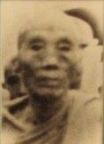

BuddhaSasana
Home Page
This document is written in Vietnamese, with Unicode
Times font
|
 Hòa thượng có thế danh là Lê Văn Tâm, sinh năm Mậu Tuất (1898) trong một gia đình nông dân tại huyện Cai Lậy, tỉnh Tiền Giang. Thân phụ Ngài là cụ Lê Văn Cường, thân mẫu là cụ Ðặng Thị Dưỡng. Gia đình Ngài quy y theo Phật giáo Bắc Tông. Thuở nhỏ Ngài đã theo gia đình thường xuyên đến các chùa để lễ Phật tụng kinh. Năm 18 tuổi, duyên lành đã đến, Ngài xuất gia tại chùa Khánh Quới thuộc phái Lâm Tế (Thiền tông Trung Quốc). Sau đó Ngài đi hành đạo ở các chùa Long Thành, Huỳnh Long rồi trở về chùa Phi Lai nơi Ngài đã quy y từ thuở nhỏ. Năm 30 tuổi (1920), Ngài sang Campuchia nghiên cứu kinh điển Tam Tạng Pàli. Năm 1940, Ngài gặp Hòa thượng Thiện Luật (người Việt Nam tu theo hệ phái Nam tông, bấy giờ ở tỉnh Preyveng, Campuchia) và được thọ giới theo Phật giáo Nam Tông. Năm 1941 Ngài phát nguyện thực hành pháp môn Ðầu Ðà khất thực và độc cư trong rừng. Năm 1946, Ngài thọ giới Tỳ kheo với Ngài Dhammavansa Guna Thera. Vì cảm kích nếp độc cư thiền định trong rừng nên Thầy tế độ đã ban pháp danh cho Ngài là Ẩn Lâm (Arannavasi). Ngài luôn tâm niệm người tu phải sống độc cư thiền định, rừng núi là môi trường yên tĩnh sẽ giúp cho tâm được thanh tịnh. Ðồng thời Ngài gìn giữ giới hạnh trang nghiêm trong sạch, lấy giới định tuệ làm phương châm tu tập. Ngài có đời sống tri túc, thiểu dục của bậc Sa môn chân chính. Dù ở đâu Ngài cũng trì bình khất thực hàng ngày. Năm 1954, từ Campuchia về Sài Gòn, Ngài tu tập tại các chùa Kỳ Viên, Giác Quang, và Bửu Quang. Năm 1957, Giáo Hội bổ nhiệm Ngài về trụ trì chùa Tăng Quang (Huế). Năm 1959, Ngài theo quyết định của Giáo Hội về điều hành Phật sự tại chùa Tam Bảo (Ðà Nẵng). Năm 1961, Ngài lại về trụ trì chùa Thanh Vân, Tây Ninh. Năm 1962, Giáo Hội điều động Ngài về trụ trì chùa Phước Hải, Tân Hiệp, Tiền Giang. Năm 1975, Giáo Hội Tăng Già Nguyên Thủy Việt Nam điều Ngài về trụ trì chùa Kỳ Viên, Bàn Cờ, Sài Gòn. Trên bước đường hoằng dương chánh pháp, đâu đâu cũng có dấu chân của Ngài, từ miền Nam ra miền Trung, từ miền Trung xuống miền Tây. Ngài là một trong những vị Giáo phẩm cao cấp của Phật giáo Nam Tông được Tăng ni Phật tử hệ phái tôn kính ngưỡng mộ. Năm 1965, Ngài được tín nhiệm suy cử vào chức Phó Tăng Thống Giáo Hội Tăng Già Nguyên Thủy Việt Nam. Năm 1976, Ngài được chư Tăng suy cử Ngài vào chức vụ Tăng Thống GHTGNTVN. Trong nhiệm kỳ 1979 - 1982 Ngài làm Cố Vấn GHTGNTVN. Năm 1981, khi Giáo Hội Phật Giáo Việt Nam được thành lập, Ngài được Ðại hội suy cử vào chức vụ Phó Pháp chủ Hội đồng Chứng minh. Tháng 10-1982 sức khỏe của Ngài bắt đầu suy yếu. Mặc dù bệnh duyên như vậy, nhưng Ngài vẫn vô cùng sáng suốt khi Tăng chúng và Phật tử đến thăm, Ngài thường nhắc nhở việc tu hành. Hình ảnh một vị Hòa thượng Cao tăng luôn luôn chánh niệm, tỉnh giác trước giờ phút viên tịch đã tác động vào niềm tin của hàng Phật tử xuất gia cũng như tại gia cư sĩ rất nhiều. Vào lúc 10 giờ 30 phút sáng 20-12-1982, tức mồng 6 tháng 11 năm Nhâm Tuất, Ngài đã an nhiên thị tịch. Một đại thọ đã không còn, một thuyền từ đã tách bến, để lại niềm thương tiếc vô bờ nơi các hàng môn đệ hậu sanh./. (Trích:
Tiểu sử Danh tăng Việt Nam, Thích Ðồng Bổn chủ biên,
1996) |
last updated: 25-02-2005